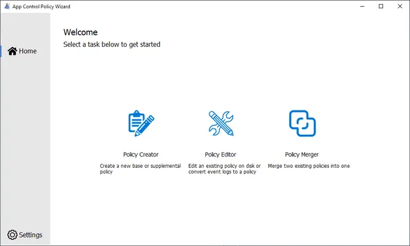
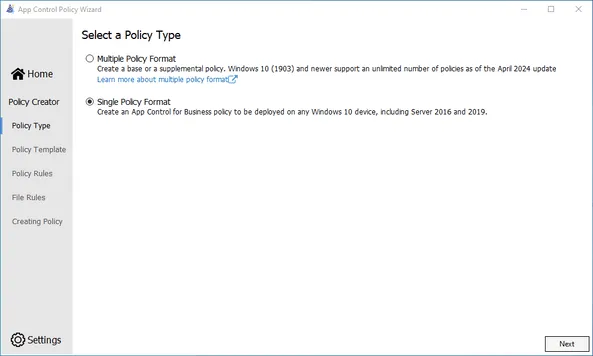
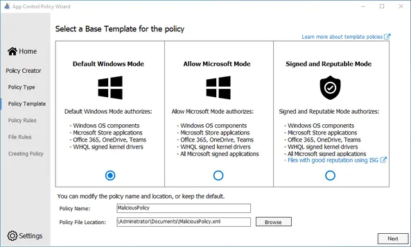
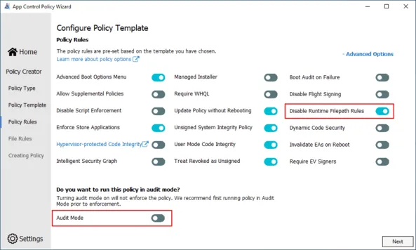
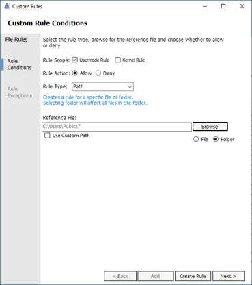
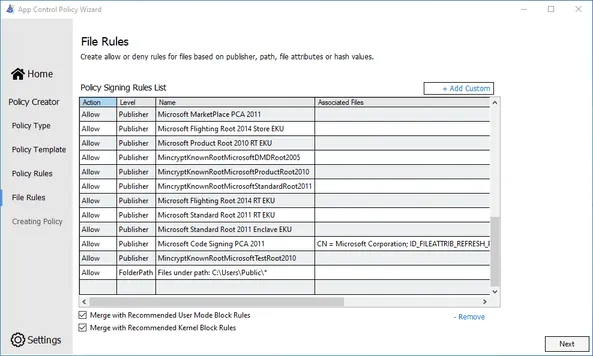
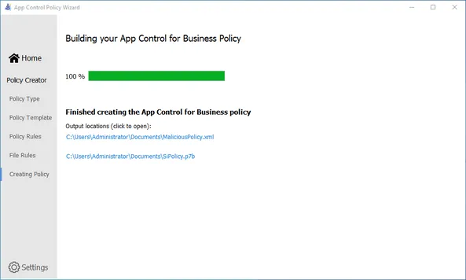
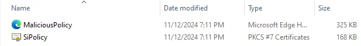
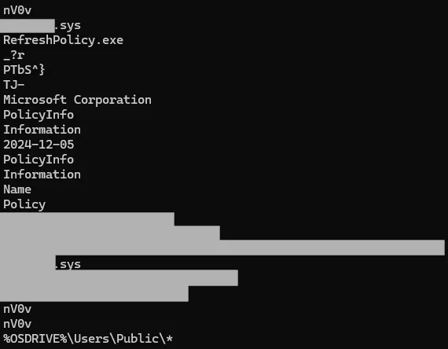

概述：WDAC、武器化 WDAC
相关参考：
WDAC
Windows Defender 应用程序控制，允许配置 HoLOLens 以阻止应用启动。
微软官方说明：使用 Windows Admin Center 管理 Windows Defender 应用程序控制（WDAC）强制实施基础结构 | Microsoft Learn
QUOTE
Windows Defender 应用程序控制 (WDAC) 是 Windows 10+ 和 Windows Server 2016+ 默认启用的一项技术，它允许组织对 Windows 机器上允许运行的可执行代码进行精细控制。WDAC 配置适用于整个机器，影响设备的所有用户。应用的 WDAC 配置范围广泛且严格，包括用户模式和内核模式应用程序、驱动程序、DLL 和脚本的规则。WDAC 为防御者提供了一个出色的工具来阻止 Windows 端点上潜在的威胁执行，但 WDAC 也可以被攻击者利用。
虽然 WDAC 通常用于防御目的，但它也可以用来阻止遥测源和安全解决方案，如终端检测和响应 (EDR) 传感器。这些传感器往往在内核空间中执行，并故意使自己难以停止或篡改。然而，由于 WDAC 可以对内核模式可执行文件和驱动程序应用策略，如果攻击者能够应用 WDAC 策略（这可以通过远程管理权限完成），EDR 传感器就会面临风险。当策略在启动时应用时，EDR 传感器将不再被允许运行，因此不会加载，从而允许攻击者在没有 EDR 限制的情况下操作。
简而言之，这是一种主要用于防御规避和协助 Active Directory 环境中横向移动活动的技术。它使用专门制作的 WDAC 策略来停止端点上的防御解决方案，可以让攻击者在没有 EDR 等安全解决方案的负担下轻松地转移到新主机。在更大规模上，如果攻击者能够写入组策略对象 (GPO)，那么他们就能够在整个域中分发此策略，并系统地停止域中所有端点上的大多数（如果不是全部）安全解决方案，这可能允许部署后渗透工具和/或勒索软件。
MITRE ATT&CK 技术：损害防御（T1562） 潜在影响：整个 Active Directory 林中的所有安全工具可能被远程系统地停止
攻击技术
虽然这种攻击可以通过多种方式执行，但仍有一个共同因素 - WDAC。由于 WDAC 策略默认拒绝，阻止许多 EDR 传感器加载变得非常简单。然而，攻击者的主要考虑因素是既要建立自己的访问权限，又要限制防御解决方案的访问权限。因此，WDAC 策略需要明确允许攻击者执行权限，才能从攻击角度来看有意义。这就是制作专门的 WDAC 策略最有用的地方。通过自定义策略，攻击者可以停止 EDR 传感器，同时也允许自己执行权限。
) 这种攻击可以分为 3 个一般阶段执行：
- 攻击者将 WDAC 策略放置在 Windows 代码完整性文件夹内的适当位置。
C:\Windows\System32\CodeIntegrity - 即使策略在运行时刷新，它也不会应用于正在运行的进程。因此，重启机器是重启 EDR 传感器最简单的方法。
- 一旦机器开始重启过程，WDAC 策略会在任何 EDR 驱动程序之前应用，并在其执行之前将其停止。
制作 WDAC 策略
由于某些 EDR 供应商拥有Windows 硬件质量实验室 (WHQL)驱动程序，因此被攻击环境的上下文对于这种技术的成功至关重要。这些驱动程序在 WDAC 策略中默认被允许，并且将允许 WHQL 签名的 EDR 驱动程序加载，尽管其服务二进制文件被阻止。在测试过程中发现，虽然 EDR 服务被成功阻止，但 EDR 的驱动程序被允许加载并继续显示活动。虽然从攻击者的角度来看，最明显的解决方案是简单地禁止 WHQL 驱动程序，但这会造成端点无法启动的重大风险。毕竟，这种技术的最终目标是协助横向移动程序，如果设备永远无法启动，这就变得不可能。因此，一个更好的方法是基于特定发布者或文件属性来专门阻止内核模式组件。在测试过程中发现，一些 EDR 供应商的驱动程序如果不允许运行，将导致机器无法启动。这些驱动程序似乎没有发送任何网络流量，所以决定不仅基于发布者进行阻止，而是专注于基于文件属性进行阻止。这证明非常成功，因为目标驱动程序和可执行文件在不中断设备的情况下被禁止加载。
如前所述，专门的 WDAC 策略对于这种攻击从攻击者角度来看非常重要。对于阻止没有 WHQL 驱动程序的 EDR，该策略必须至少：
- 处于强制模式
- 允许一个通用路径，以便可以部署可执行文件（即后渗透功能）以供执行
第一个要求很容易实现 - 只需关闭审核模式。对于第二个要求，选择任何任意位置来存储潜在的后渗透功能材料就足够了。
另一个重要的考虑因素是兼容性。确保 WDAC 策略能在尽可能多的端点上工作非常重要。因此，策略应该使用单一策略格式以最大化兼容性。在这个例子中，我将允许在 C:\Users\Public 中执行应用程序。要创建这个策略，我将使用 App Control Policy Wizard。首先，选择 Policy Creator

)如前所述，单一策略格式是兼容性最好的选择。

)这个策略应该足够严格，确保 EDR 不会运行。因此，选择 Default Windows Mode。

)现在，使用前面提到的必要要求配置策略。首先，禁用审核模式并启用Disable Runtime Filepath Rules设置，以允许在策略中白名单文件路径。

)点击 Add Custom 选项并确保：
- 范围仅设置为用户模式（路径规则不能应用于内核模式代码）
- 动作设置为允许
- 规则类型为
Path Reference File设置为Folder 选项，并指向C:\Users\Public\*

)确保规则正确添加。作为经验法则，我通常将策略与推荐的阻止规则合并。虽然这不是必需的。

)现在，策略应该生成并出现在当前用户的文档文件夹中。

)
)除了编译后的策略外，还生成了策略配置的 XML 表示。虽然 XML 文件在后续可以编辑以使其更加通用，但在攻击本身中使用的编译策略是SiPolicy.p7b文件。
WHQL
寻找攻击向量
创建 WDAC 策略后，是时候找到使用它的方法了。有三种主要的攻击类型：
- 本地机器
- 远程机器
- 整个域
对于单台机器（本地/远程），部署 WDAC 策略只需要在 C:\Windows\System32\CodeIntegrity\ 上有写入权限，默认情况下这需要管理员权限。
对于整个域部署 WDAC，用户需要能够为域创建 组策略对象 (GPO) ，并将策略部署在所有域计算机都可以读取的位置。这个部署位置通常包括域控制器上的 SYSVOL 共享等 SMB 共享，但不一定必须是。因此，攻击者可以在策略位置上非常有创意 - 它需要是 UNC 路径或域中本地机器账户（LOCAL SYSTEM）有访问权限的本地有效路径。
检测
虽然检测是可能的，但由于这种攻击可以快速执行，强烈建议采取缓解措施。话虽如此，要检测终端上 WDAC 策略的部署，最好是查看文件系统中特定位置的特定命名文件（见下表）。如前所述，出于兼容性考虑，单一策略格式是最佳选择，但攻击者并不局限于此。如果组织使用较新版本的 Windows 操作系统，那么多策略格式也可以达到相同的效果。
| 策略格式 | 文件系统位置 | 策略文件名格式 |
|---|---|---|
| 单一 | C:\Windows\System32\CodeIntegrity\ | SiPolicy.p7b |
| 多个 | C:\Windows\System32\CodeIntegrity\CiPolicies\Active\ | {XXXXXXXX-XXXX-XXXX-XXXX-XXXXXXXXXXXX}.cip |
不幸的是，检测策略是否被放置在这些敏感位置并不是检测此攻击的最佳方式。虽然这些位置存在策略确实是攻击的一个特征，但策略存在于这些位置本身并不一定是恶意的。因此，应该采取措施主动扫描 WDAC 策略以确定其完整性，这包括调查其中字符串]和特定字节。
例如，一个只允许运行 Windows 二进制文件和 WHQL 签名驱动程序的基本 WDAC 策略将阻止所有不符合这些要求的程序。因此，不使用 WHQL 签名驱动程序的 EDR 供应商将被此策略阻止，尽管策略从未特别提及与该供应商相关的任何内容。这给潜在的检测带来了重大困难，因为检测需要建立在发现供应商未被提及的基础上。
另一方面，有些 EDR 供应商使用 WHQL 签名驱动程序，因此需要 WDAC 策略特别阻止该供应商的驱动程序。幸运的是，这一要求使检测变得更容易，因为可以标记对某些 EDR 供应商的提及。虽然已编译的 WDAC 策略的格式并不公开，但检测潜在恶意策略最简单的方法可能就是观察其中包含的字符串。如下面的截图所示，从 WDAC 策略中导出字符串可以显示策略中引用的所有可执行文件、驱动程序和文件属性，尽管出于安全考虑，引用的文件属性已被编辑。

)虽然仅基于字符串创建检测可以检测到恶意策略，但这样做会产生大量误报。因此，能够检测已编译策略中的字节变得至关重要。在分析已编译 WDAC 策略的转储后，对已编译 WDAC 策略的结构进行了一些关键观察。
| 字节偏移量 | 描述 | 字节 |
|---|---|---|
| 0x00 -0x04 | 将文件标记为已编译的 WDAC 策略 | 0x07 00 00 00 0E |
| 0x25 | 禁用运行时文件路径规则（允许在策略中使用文件路径） | 0x20 表示关闭 |
| 0x28 表示开启 | ||
| 0x26 | 控制强制/审核模式 | 0x8C 表示强制 |
| 0x8D 表示审核 | ||
| 0xE0 -0xE7 | 需要更多研究，但这似乎控制着使此攻击技术正常工作所需的允许/阻止规则 | 0xFF FF FF FF FF FF FF FF 表示阻止 |
| 0x00 00 00 00 00 00 00 00 表示允许 |
在研究过程中，我们发现基于已编译的 WDAC 策略检测特定阻止规则非常困难，这是由于 WDAC 策略的结构所致。因此，显然需要一个轻量级的检测方案，这导致了 YARA 规则的产生，用于检测 Krueger 的使用以及提及特定文件属性的已编译 WDAC 策略。这些 YARA 规则虽然对恶意策略有效，但也存在尚未解决的误报问题。因此，请自行承担使用这些规则的风险。关于已制定的检测方案，请访问Krueger 的 Github 仓库[7]。
不幸的是，这里的关键结论是检测”恶意”策略并不容易。如果组织在其环境中没有使用 WDAC，检测应该主要针对上表中提到的位置中添加/编辑/删除策略的尝试。此外，这种攻击的检测不太可能为防御者提供太多预警，因为一旦策略部署在终端上，只需重启就能停止 EDR。再次强调，强烈建议采取措施来缓解潜在的攻击。
缓解措施
简而言之，可以使用两种缓解技术：
通过组策略强制执行 WDAC 策略 遵循最小权限原则 - 限制对代码完整性文件夹、SMB 共享和组策略修改的权限 虽然及时检测这种攻击以减少影响很困难，但缓解并不难。首先，通过组策略强制执行远程 WDAC 策略将消除攻击者向单个终端推送策略的威胁。当 GPO 强制执行 WDAC 策略时，即使本地 WDAC 策略副本被覆盖，机器也会从 GPO 定义的位置拉取策略，并在”恶意”策略生效之前覆盖它。如果组织不在其终端上使用 WDAC，一种在环境中维持使用和功能性同时仍提供对这种攻击的保护的方法是通过 GPO 部署处于审核模式的 WDAC 策略。
还有一些较小的缓解措施可以帮助减少这种攻击带来的影响。确保本地管理员账户被禁用和/或通过防御性解决方案（如 Microsoft 的本地管理员密码解决方案（LAPS））强制执行安全密码，可以降低本地管理员账户被攻破并用于执行恶意行为的可能性。此外，最好限制能够修改域中组策略和远程访问 SMB 共享的用户。遵循最小权限原则是限制此攻击风险的有效方式。